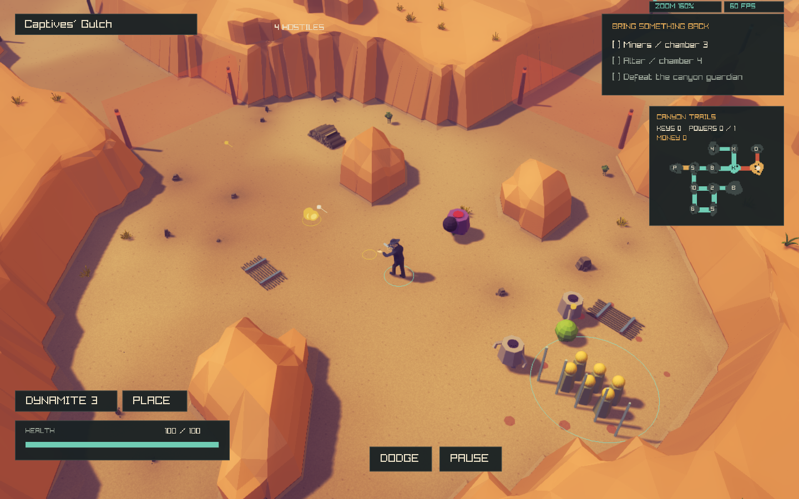
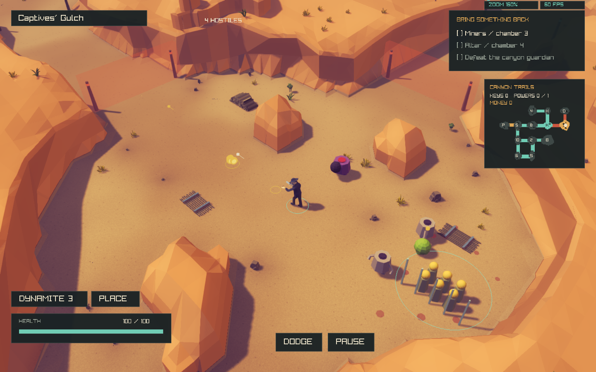

Baseline committed as b976baa. The experiments below are rejected and reverted, not the active game geometry.


Local shelf masks removed bands but retained columns. Broader wall faces then looked like constructed panels. Extra relief did not fix the overall silhouette and failed the steep-face geometry check. These are not presented as improvements.


Failed exploratory geometry check · Progress and remaining work
The user authorized changing the actual playable boundary. See the current physical-boundary implementation. The text below records the earlier constraint.
The top-down target changes the clearing outline. The prior instruction preserves exact playable footprints and collision boundaries. Clarification is pending: allow organic boundary reshaping while retaining the room graph, roads, exit sockets and combat clearances, or retain exact footprints and limit work to cliff faces/terraces.
Reference fidelity remains unfinished. Materials, lighting, controls and gameplay rules were not changed.